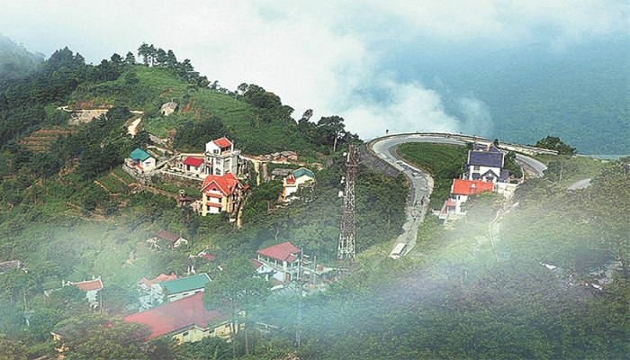
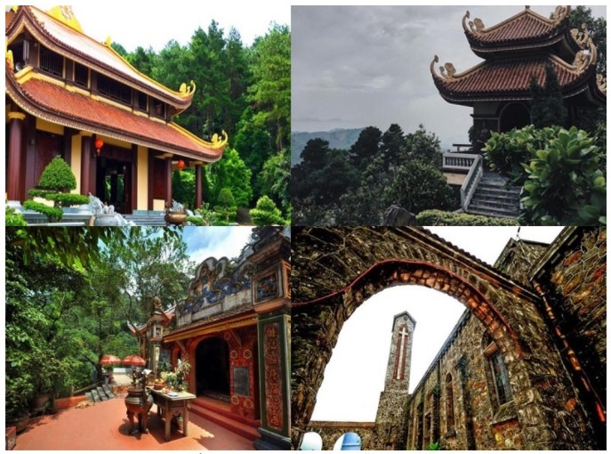
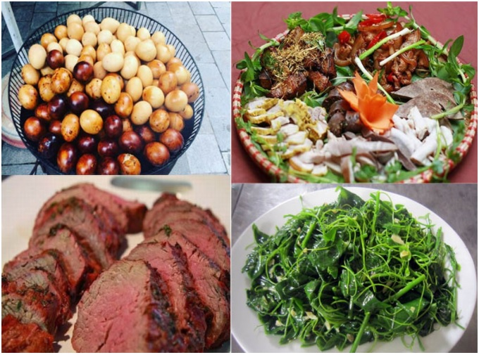

Có một thị trấn Tam Đảo luôn chìm trong mây
Du khách mô tả vẻ đẹp của thị trấn Tam Đảo như nét đẹp u buồn của cô gái đa sầu đa cảm. Thị trấn dường như lúc nào cũng chìm trong sương phủ với mây mờ. khách mô tả vẻ đẹp của thị trấn Tam Đảo như nét đẹp u buồn của cô gái đa sầu đa cảm. Thị trấn dường như lúc nào cũng chìm trong sương phủ với mây mờ.
Thị trấn Tam Đảo cách Hà Nội khoảng 80km. Từ thủ đô du khách chạy xe mất khoảng 2h đồng hồ. Thị trấn Tam Đảo nằm ở độ cao khoảng 1.000m so với mực nước biển. Nơi đây có khí hậu mát mẻ quanh năm, còn được xem là Đà Lạt thứ 2 của
Việt Nam.
Thị trấn Tam Đảo luôn chìm trong mây và sương mù. Có những lúc giữa trưa nắng mà Tam Đảo vẫn ngập trong mây và sương trắng. Mây giăng kín những tán cây, trùm lên những mái nhà, sà xuống tận mặt đường. Đang bồng bềnh hư ảo là vậy, nhưng cũng chỉ cần một luồng gió mạnh thổi qua, đám mây và sương mù lại dạt về phía thung lũng, để lộ dần ra một thị trấn nhỏ nằm bám vào vách núi, trông thật cheo leo mà cũng thật yên bình.
Mỗi năm cứ vào tầm này, lúc gần cuối thu đầu đông, khi trời chuyển gió heo may, lá cây hai bên đường đang dần thưa và ngả sang màu vàng thơ mộng cũng là lúc thích hợp nhất để du khách đến thăm thị trấn Tam Đảo.
Đây cũng là thời điểm đẹp nhất trong năm để đi trekking. Những cơn mưa lớn đã chấm dứt, độ ẩm giảm, hiện tượng sạt lở đất cũng không còn. Du khách sẽ bị cuốn hút bởi những cung đường còn khá hoang sơ, hệ động, thực vật phong phú, cảnh quan đẹp mắt. Trên đường đi, du khách thỏa sức ngắm phong lan, địa lan, ngoài ra là vô số loài hoa dại không biết tên với đủ màu sắc sặc sỡ.
Đến với Tam Đảo là đến với một nơi hội đủ bốn mùa trong một ngày khiến du khách thích thú: gió xuân khe khẽ thổi vào buổi sáng sớm, nắng ấm của mùa hạ khi trời dần trưa, gió heo may khe khẽ như mùa thu vào mỗi buổi chiều và khi màn đêm buông xuống mang theo chút giá lạnh của ngày đông.
Ở Tam Đảo có nhiều biệt thự cổ do người Pháp xây dựng từ cuối thế kỉ 19, mang nét đẹp cổ kính, trầm mặc. Đến Tam Đảo, du khách có thể tham quan một số địa điểm như Cổng trời, Thác Bạc, Chùa Vàng, Đền Bà Chúa Thượng ngàn, Đền Đức Thánh Trần, Nhà thờ đá, Tháp truyền hình, Đỉnh Rùng Rình...
Ngoài ra, du khách cũng có thể đi dạo chợ đêm, mua sắm nhiều đặc sản địa phương như su su, gà đồi, chuối ngự, sâm cau, mua hàng thủ công mỹ nghệ làm quà lưu niệm... hoặc thưởng thức những món ăn trong không khí se lạnh của nơi này.
Thị trấn Tam Đảo thu hút du khách ở mọi lứa tuổi. Người lớn tuổi đến đây bởi thích khung cảnh thanh bình, cổ kính, các cặp đôi tìm kiếm sự lãng mạn, riêng tư cũng đến nơi này. Người trẻ cũng thích cùng nhau đến đây dã ngoại, cắm trại để quên đi mệt mỏi hằng ngày.
Nếu muốn đi đâu đó để thay đổi không khí, hãy chọn thị trấn Tam Đảo nhé, tin rằng khung cảnh thiên nhiên và sự thanh bình nơi đây sẽ khiến du khách vui vẻ và có một kì nghỉ dưỡng thực sự hài lòng.